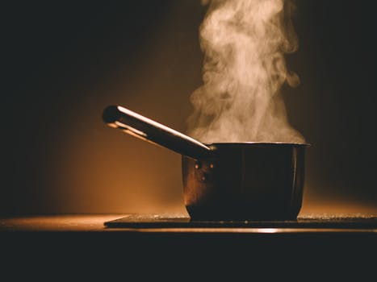
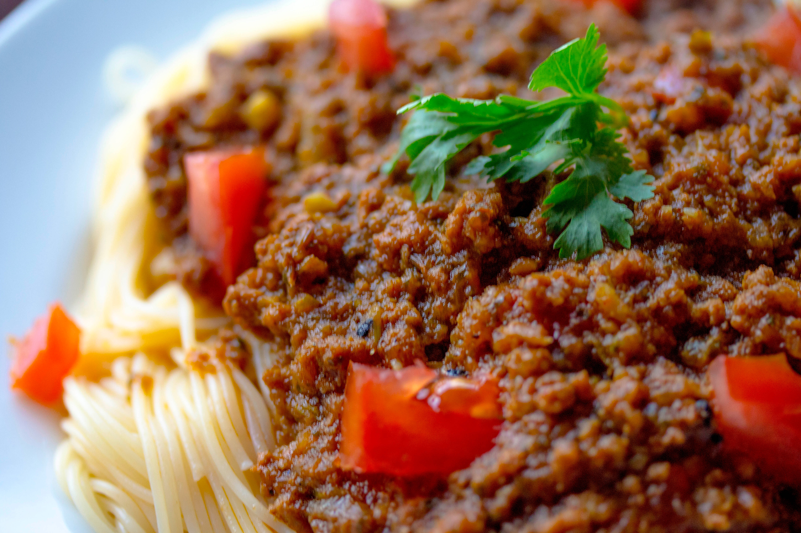
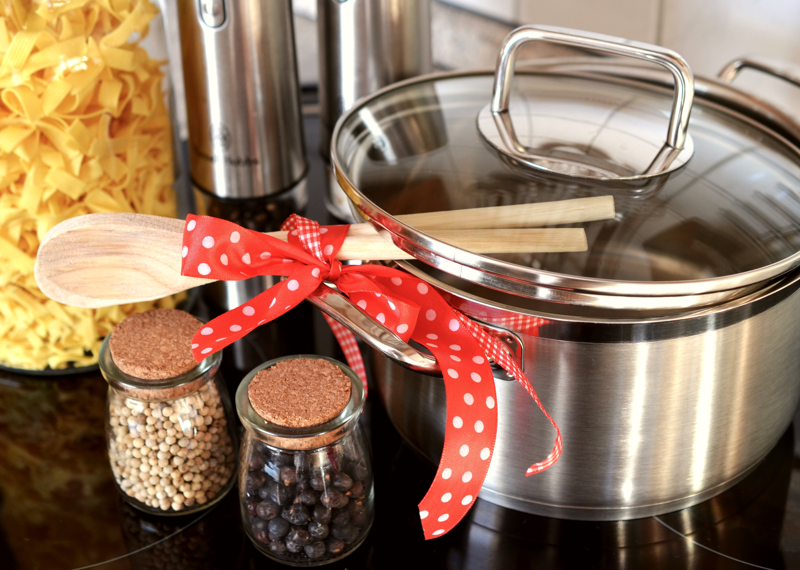

Step 1
Boil water and make sure to add salt and olive oil! Many people forget to do this step, but it is vital for the flavor of the pasta.
Step 2
Add spaghetti to the boiling water, and cook for about 8-10 minutes (the longer you cook, the more tender it will be). At the same time, begin making the sauce and meat in separate pots and pans.

Step 3
Put a jar of tomato sauce into a pot and set the stove temperature to medium-low. Add a tablespoon of butter, a handful of parmesean cheese, one garlic clove, half a cup of red wine, lemon juice from 1/2 of a lemon, and salt & pepper to taste (optional: add diced plum tomato). At the same time, begin to cook your ground beef in a pan and set the stove temperature to medium. Add a tablespoon of olive oil, one garlic clove, and salt & pepper to taste. Once your meat is cooked, add it to the sauce pot and change the stove setting to low.
Step 4
Drain the pasta out of the bowl and do NOT rinse the pasta in the sink! Rinsing the pasta will make the pasta stick together and, more importantly, will cause a loss in flavor. Add parmesian cheese and olive oil to the pasta once it's drained.

Step 5
Mix the pasta with the sauce while the stove is still on a low setting. This will allow the flavors to simmer together and it won't be as messy as having two separate bowls at the dinner table.
Step 6
Make sure all appliances are turned off and that your kitchen is clean. Enjoy!